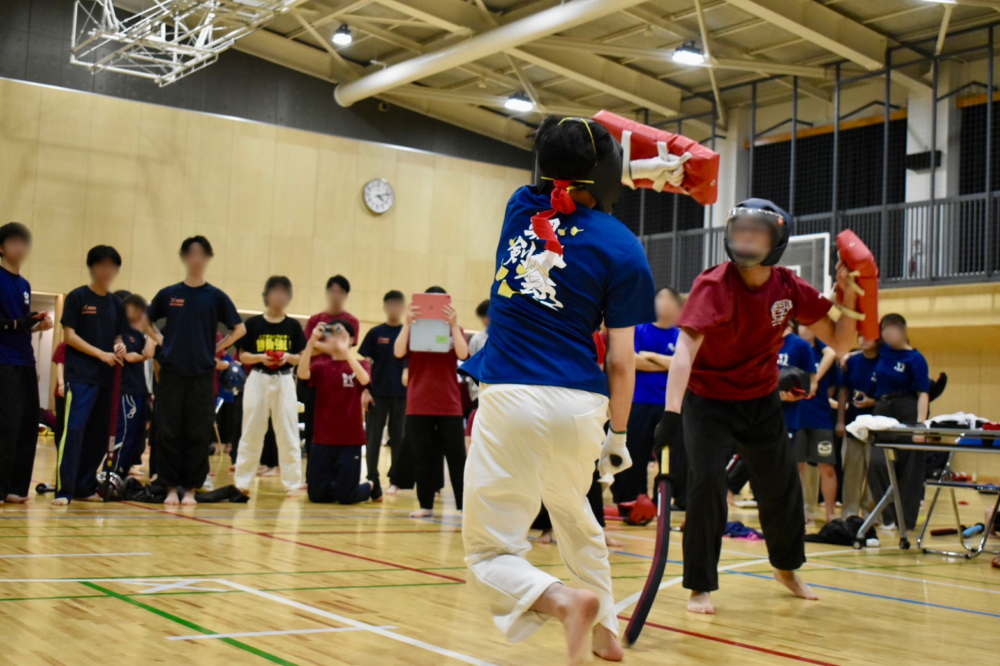

Members
部員紹介
部員数は東京大学と東京女子大学を合わせて約35名。
ここでは主要メンバーを紹介します。
Show More
颯剣会(そうけんかい)は、東京大学公認のスポーツチャンバラサークルです。
1998年に創立され、2026年現在28周年を迎えました。
大学スポーツチャンバラの中では歴史のあるサークルで、過去には大学から競技を始めてグランドチャンピオンになった選手も在籍しました。
現在は東京大学の他に東京女子大学にも支部が存在します。

颯剣会はここ数年、団体戦3部リーグから抜け出せずにいました。
しかし2024年度の春季大会で状況は一転。
5人制団体で1年生を3人も配置しながらも見事2部リーグに昇格。
以降は部員数の増加もあってか、2部リーグを維持しています。
昨年度は個人戦でも2,3年の部員が大活躍。
数々の賞状やメダルを獲得しました。
盛り上がりを見せている颯剣会。来年度にも乞うご期待です。
部員の過去の入賞歴はこちら
Record
部員数は東京大学と東京女子大学を合わせて約35名。
ここでは主要メンバーを紹介します。
Show More
スポーツチャンバラ颯剣会は、新入部員の募集も行っています！
東京大学、東京女子大学の学生はもちろん、大学院生や他大学に在籍している方でも大歓迎です。
興味をもったら、まずは体験会へ！
参加希望の方は下のボタンから↓
Contact Us